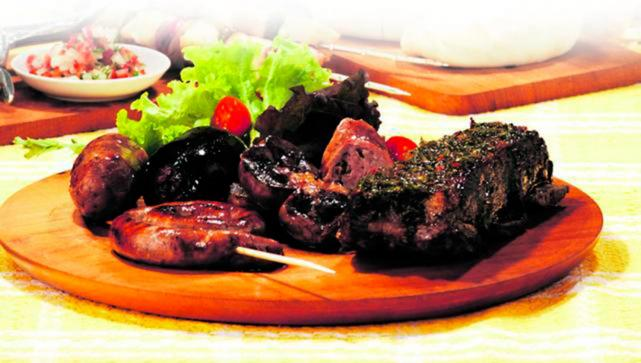

Los 10 secretos para hacer un asado irresistible

Un buen fuego, carne de calidad y mucha paciencia son los pilares. A partir de allí, todo depende del cocinero.
- Prender un buen fuego abundante
- La carne debe estar a temperatura ambiente
- Usar sal gruesa si o si